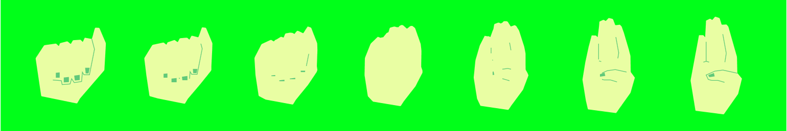
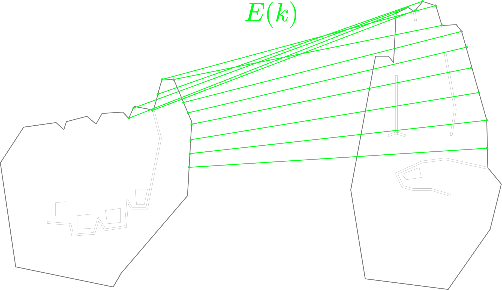

Design
번역이 아닌 '기록'으로서의 수어
디지털 세상을 위한 수어 작업은 그동안 '일반 텍스트로의 번역'에 머물러 있었다. 우리는 손끝의 궤적과 몸짓의 호흡을 또 하나의 독자적인 언어로 바라보고, 이를 시각적으로 아카이빙하는 '타이포그래피 에디터'로 재정의했다.
Sign language as a 'record'
Until now, sign language work for the digital world has remained limited to 'translation into plain text.' We viewed the trajectories of fingertips and the rhythm of gestures as an independent language of their own, redefining this through a 'typography editor' that visually archives them.
비수지 신호(표정)를 비워낸 이유
수어에서 표정은 주요 문법 요소를 차지하지만, 본 프로젝트는 수어 교육 사전이 아닌 조형미를 정제하는 문자 에디터다. 한글 폰트를 설계할 때 말하는 이의 표정까지 담지 않듯, 말투(Tone)는 과감히 비우고 문자(Character) 자체의 조형성과 구조적 규칙에 집중했다. 지문자를 중심으로 조형적 완성도를 높이고 키보드 입력을 병행해 접근성도 확장했다.
Reason for Excluding Non-Manual Signals(Facial Expressions)
Although facial expressions constitute a key grammatical element in sign language, this project is a character editor that refines aesthetic form, rather than an educational sign language dictionary. Just as designing a Korean font does not capture the speaker's facial expression, we boldly omitted tone to focus on the aesthetics and structural rules of the characters themselves. We raised the level of aesthetic completion around fingerspelling while expanding accessibility through keyboard input.
인터랙티브 튜토리얼
에디터 진입 전, 게임 형태의 간단한 애니메이션으로 사용법을 안내한다. 사용자는 직관적인 움직임을 통해 자연스럽게 가이드를 익히는 동시에, 수어 그래픽이 지닌 조형적 미감에 흥미를 갖게 된다.
Interactive Tutorial
Before entering the editor, a brief, game-like animation introduces how to use the system. Through intuitive interaction, users naturally pick up the guide while becoming engaged by the graphic aesthetic of sign language.
엽서로 완성되는 문화적 교량
완성된 그래픽은 엽서로 저장하고 공유할 수 있다. 수어 지문자로 새겨진 이니셜은 농인과 청인 사이를 잇는 고유한 암호이자 비밀 편지가 되어, 수어의 예술적 가치를 나누고 두 문화의 심리적 거리를 좁힌다.
Cultural Bridges Completed as Postcards
Completed graphics can be saved and shared as postcards. Cards crafted in sign language fingerspelling serve as unique codes and secret letters connecting Deaf and hearing communities, sharing the artistic value of sign language while narrowing the cultural divide.
Development
지수어 형태 변환

Interactive & Dynamic 이라는 의도에 맞게 자연스러운 지수어 변화 애니메이션을 구현하고자 했다. 'A'라는 문자와 'B'라는 문자 사이의 자연스러운 변화(morph)가 필요하다. 디자이너가 제공한 svg path는 문자마다 개수와 점 분포가 다르다. 직접 path끼리 보간하면 대응관계가 맞지 않기 때문에 전체 길이를 구한 후, 동일한 간격으로 N=256개의 점을 뽑는 방식을 택했다. 하나의 지수어의 토폴로지는 점 256개의 집합으로 이루어진 닫힌 외곽선이 된다.
닫힌 외곽선은 시작점이 임의적이다. 따라서 같은 손가락 위치라도 한 svg에서는 0번 점, 다른 svg에서는 80번 점일 수 있다. 대응점들 사이의 거리가 멀 경우 morph의 중간 단계 모양이 이상해진다. 이를 보정하기 위해 최소 평균제곱오차(MSE)를 사용했다. 모든 순환 이동량 k에 대해 오차값이 최소가 되는 k*를 찾고 해당 값으로 시작점을 보정한다.
디자이너가 제공한 svg마다 path의 방향이 다를 수 있기 때문에 정방향 순서와 역방향 순서를 모두 검사한다. 이 과정이 없으면 손가락이 비정상적으로 뚫고 지나가는 현상이 일어날 수 있다.

하나의 지수어를 다른 지수어로 변화시키는 과정에서의 중간 점은 시작점과 목표점 사이의 선형 보간(lerp)으로 계산한다. 더 부드러운 애니메이션을 위해 선형 보간 값을 시간에 따른 3차 함수 smoothstep으로 계산했다. 초반과 끝부분의 속도가 0에 가까워지므로 형태가 갑자기 움직이거나 멈추는 느낌을 줄였다. 손톱이나 선 같은 세부 요소들도 있다. 이는 외곽선 변화와 별도로 앞부분에서 사라지고 뒷부분에서 나타나도록 처리했다. 손톱의 경우 가로 길이와 세로 길이를 비교하여 더 긴 축 방향으로 줄어들게 했고, 선의 경우 각 segment의 길이가 줄어들게 했다.
지수어 인식 알고리즘
프로젝트의 핵심인 사용자의 지수어은 오픈소스 프레임워크인 MediaPipe를 이용했다. 카메라를 통해 얻은 손 이미지에서 21개의 관절 좌표(랜드마크)를 검출한다. 0번 랜드마크인 손목을 원점으로 하고, 손의 최대 폭과 높이로 각 좌표를 나눠 정규화해 손의 위치에 관계 없이 형태만을 인식할 수 있게 했다. 인식한 관절의 좌표들은 필터링 이후 사전학습된 머신러닝 모델의 추론과정을 거쳐 지수어가 가리키는 알파벳의 확률값을 출력하게 된다.
추론의 정확도를 높이기 위해 인식한 관절 랜드마크는 필터링 과정을 거친다. 먼저 고주파 잡음을 줄이기 위해 매 프레임에서 새 관측값과 이전 필터값을 가중합하는 EMA(Exponential Moving Average) 필터를 적용했다. 하지만 손이 빠르게 움직일 때 지연이 일어난다는 점에서 한계가 있었다. 이를 보완하기 위해 One Euro Filter로 개선했다. 프레임 사이 위치 변화를 통해 현재 속도를 근사하고, 속도를 EMA로 부드럽게 만든다. 그 뒤 움직임이 빠를 수록 cutoff를 높인다. 이렇게 하면 손이 빠르게 움직일 때 필터를 덜 강하게 적용해 지연을 줄일 수 있다. 손을 가만히 들고 있을 때는 흔들림을 강하게 제어하고, 수화를 바꾸기 위해 손을 움직일 때는 지연을 줄인다.
머신러닝 파이프라인은 다음과 같다. 구조는 classifier이며 모든 과정에서 파라미터들은 사전학습된 값을 사용했다. 먼저 각 점마다 x, y 좌표를 읽어 총 42차원의 feature vector를 입력으로 가진다. MLP의 첫 layer에서 Batch Normalization을 통해 정규화를 거친다. 이후 42차원으로부터 4개의 FC layer를 거쳐 26차원의 logits를 내보낸다. 각 layer의 activation function은 Mish를 사용했다. 이후 출력된 logit에 softmax를 적용해 확률 분포로 변환한다. 가장 확률이 높은 클래스가 지수어의 알파벳이 된다.

Info
- 너 정보
- 내 정보